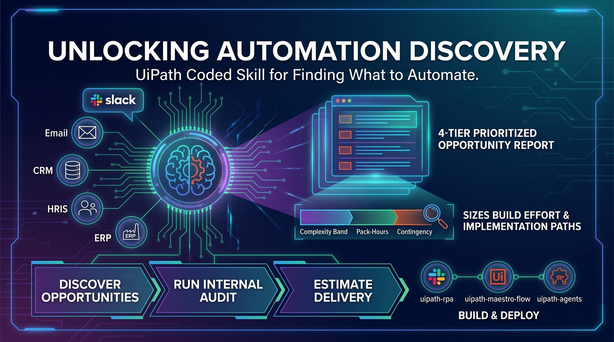
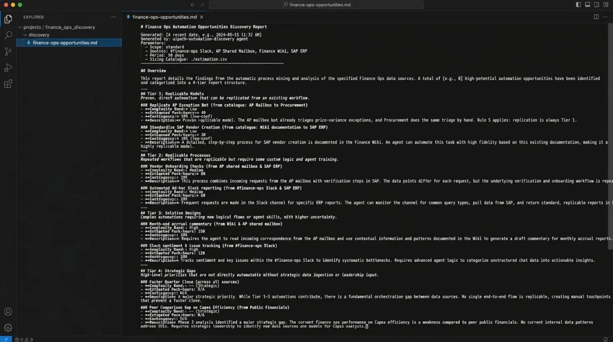

Automation Discovery Skill: the REAL data analyst
An agentic skill that reads how an organisation actually works, then ranks automation candidates against evidence instead of opinion. Here is what it does, where it breaks, and how to put it in front of a business sponsor.

What it actually is
uipath-automation-discovery is not a dashboard and it is not Task Mining with a chat box bolted on. It is an agent with a research loop: it interviews systems and people, assembles evidence about how work moves through a team, and returns a ranked opportunity list with the reasoning attached. The important word is evidence - every candidate it surfaces can be traced back to something it observed, not something a workshop attendee claimed in a room.
That changes who the output is for. A discovery workshop produces a list the automation team believes. This produces a list a finance sponsor can audit.
“The value isn't that it finds processes. It's that it finds the ones you were never going to ask about.”
- Tertius Nel, Principal Customer Success Manager
The evidence loop
The skill runs seven phases, straight from its SKILL.md. It checks in with you after each one, so you can steer before it moves on.
-
P0
Intake - interactive
Company context, tool inventory, org structure, privacy scope and scope size (quick scan 10 findings, standard 25, deep dive 35). It tests each source with a read-only call before mining. Rule 2: never assume, always ask.
-
P1
Mine
Parallel agents, one per source category. Priority order: messaging help channels → email → CRM/ERP → wiki → issue tracker → HRIS → web research. Raw signal summary checkpoint at the end.
-
P2
Analyze
Behavioural patterns per department, single points of failure (pseudonymised by default), proven replicable models, a department coverage map and process deep reads. Sources with fewer than 5 signals are flagged low-confidence.
-
P3
Reflect
Layers on public strategy and financials to find strategic gaps that behavioural data alone won't show. These become Tier 4.
-
P4
Report
A 4-tier prioritised report. Every Tier 1-3 finding cites a source, a metric and an affected role or team.
-
P4.5
Estimate - on request
Opportunity → complexity band → pack-hours → adjustment factors → contingency. The band-to-hours numbers come from YOUR matrices and Pack-Hours catalogue. If you don't supply them, it stops and asks.
-
P5
Handoff
Maps each Tier 1-2 opportunity to an implementation skill (uipath-rpa, uipath-maestro-flow, uipath-agents, uipath-human-in-the-loop, uipath-platform), or to uipath-planner for multi-component designs.
Wiring it to Automation Hub
The skill is only useful if its output lands where your pipeline already lives. Push each ranked candidate into Automation Hub as an idea with its evidence payload intact, so the CoE reviews the reasoning rather than re-litigating the score.
from uipath import AutomationHub, DiscoveryAgent
agent = AutomationHub.discovery("finance-ops")
hub = AutomationHub(tenant="prod")
for c in agent.rank(min_confidence=0.72):
hub.ideas.create(
name=c.process_name,
category=c.pillar,
evidence=c.evidence_bundle(), # keep the trail
est_hours=c.annual_hours_saved,
source="uipath-automation-discovery",
)
print(f"{c.rank:>2}. {c.process_name:<38} {c.confidence:.2f}")Hands-on: from zero to first report
Enough theory. Here is the full path on a clean machine - install the UiPath CLI, wire the skill into your coding agent, authenticate, run a discovery and hand the results off to a build. Five steps, roughly fifteen minutes.
-
Install the UiPath CLI
~5 minuip is the UiPath command-line interface. The official installer is idempotent: it checks for Node.js 20+, installs @uipath/cli plus the .NET 8 SDK and Python, then wires skills into any coding agent it finds. Safe to re-run - it skips whatever is already there.
Terminal - macOS / LinuxPowerShell - Windows# one-liner: CLI + runtimes + skillscurl -fsSL https://download.uipath.com/uipath-cli/install.sh | bashirm https://download.uipath.com/uipath-cli/install.ps1 | iex# already have Node? CLI onlynpm -g install @uipath/cli# verifyuip --helpCheckuip --help should list login, logout, tools, skills, mcp and completion. If it does, you're installed.
-
Install the skill into your coding agent
~1 minA skill is not a tool - it adds no commands to uip. It's a pack of Markdown instructions your coding agent reads so it knows when to call uip, with what inputs, in what order. uip skills install pulls the whole UiPath catalog, including uipath-automation-discovery.
Terminal# auto-detects Claude Code, Cursor, Codex, Copilot, Gemini CLIuip skills install# or target one agentuip skills install --agent claude# confirm the discovery skill is presentuip skills search uipath-automation-discovery --output json# or invoke it explicitly from your agent/uipath-automation-discoveryHeads upuipath-automation-discovery is in Preview - behaviour can change between releases. uip skills install keeps it updated; npx skills add gives you a one-off copy you must update yourself.
-
Authenticate to your tenant
~2 minInstalling skills needs no login - the registry is public. Everything the skill hands off to (Automation Hub, Orchestrator, builds) does. Log in interactively on your laptop; use an External App's client credentials in CI.
Interactive loginuip login# browser opens → choose organisation + tenantuip login statusuip login tenant listuip login tenant set <tenant-name>CI / headless# External App, confidential client - secrets from envuip login --client-id "$UIPATH_CLIENT_ID" --client-secret "$UIPATH_CLIENT_SECRET"uip login --client-id $env:UIPATH_CLIENT_ID --client-secret $env:UIPATH_CLIENT_SECRETSecurityNever paste a client secret into your agent's chat. Environment variables locally, your pipeline's secret store in CI.
-
Run the discovery
~5 minAsk the question, or invoke /uipath-automation-discovery directly. Expect questions back before any mining: intake is interactive by design. Name the sources and the scope up front to shorten it. Narrow scope gives sharper evidence and a shorter report.
Claude Code - prompt/uipath-automation-discoveryStandard scan of Finance Ops. Sources: #finance-ops Slack,the AP shared mailbox, the Finance wiki and SAP. 90 days.Pseudonymise people. Our pack-hours catalogue is in ./estimation.Agent output (abridged)● Loading skill uipath-automation-discovery● Phase 0 intake · 4 sources verified read-only · scope: standard (≤25)● Phase 1 mining Slack · Email · Wiki · ERP → checkpoint● Phase 2 patterns · SPOFs · replicable models · coverage map → checkpoint● Phase 3 strategy gaps from public financials● Phase 4.5 sizing from ./estimation catalogue✓ Wrote discovery/finance-ops-opportunities.mdBeginner tipStart with one team you know well. If the report surprises you on a process you understand, you've learned how much to trust it on the ones you don't.
-
Hand off to Automation Hub and build
~2 minEvery candidate names its implementation path - uipath-rpa, uipath-maestro-flow or uipath-agents - so the next prompt is the build. For Automation Hub, the automationhub skill checks once whether your CLI ships uip ah (1.201+) and falls back to the raw API if not.
Claude Code - promptPush every Priority 1 candidate to Automation Hubwith its evidence attached, then scaffold the topone as a coded workflow with uipath-rpa.What the agent runs first# transport preflight - CLI if available, API otherwiseuip ah --helpWhy it mattersSame session, same context. The build agent already knows why the candidate ranked - nobody re-types the business case into a form.
Reading the 4-tier report
The output is a Markdown report your agent writes into the workspace. Tiers aren't a simple ranking. Tier 1 is always replicable models: automation already working in one place that could be copied elsewhere. Tier 4 is strategic gaps tied to documented priorities. If you ask for Phase 4.5, each finding also gets a complexity band, estimated pack-hours of build effort, and a contingency buffer, calibrated from your own catalogue and never invented. Click a row to see why it landed there.
-
A proven replicable model: the AP mailbox bot already triages price-variance exceptions, and Procurement does the same triage by hand. Rule 5: replication is always Tier 1.
-
High-volume behavioural pattern: it repeats weekly across Slack and email with three hand-offs, and one analyst is a single point of failure ("Finance Ops Lead A"). The value is orchestration, hence a flow.
-
Real, but fewer than 5 signals in the wiki source, so Rule 4 caps it at Tier 3 as low-confidence until a second source corroborates it.
-
A strategic gap: close speed is a documented priority in the public financials, and Phase 2 saw manual reconciliation. Multi-component, so it goes to uipath-planner.

Where it breaks
Three consistent failure modes so far: shallow system coverage (it can only reason about what it can see, so a team living in an unconnected legacy client is invisible), over-confident ranking on low-volume processes, and sponsors who read the list as a commitment rather than a hypothesis. The first is a connector problem, the second is a threshold you set, the third is a conversation you have up front.
Watch the episode
 Play on YouTube
Play on YouTube
Prefer audio? Listen on Spotify